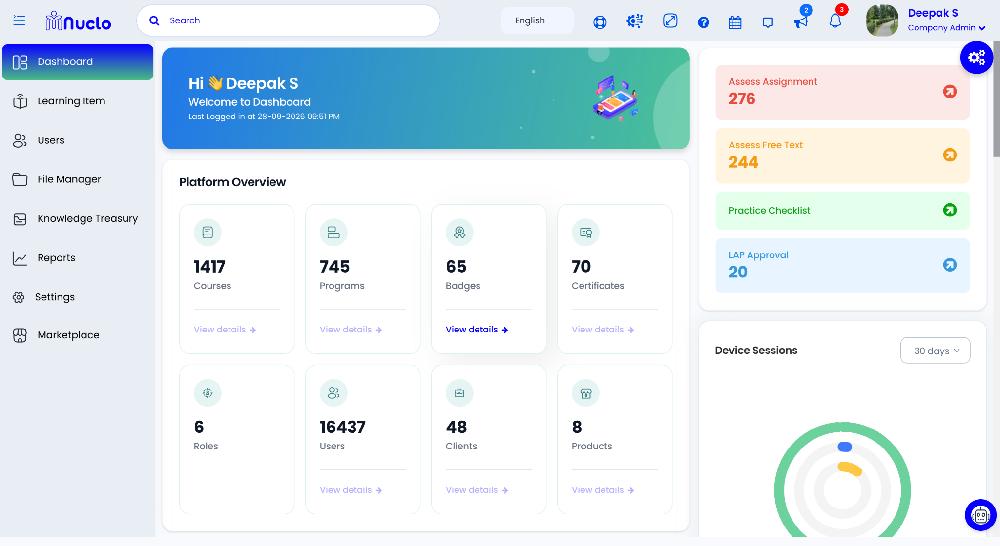
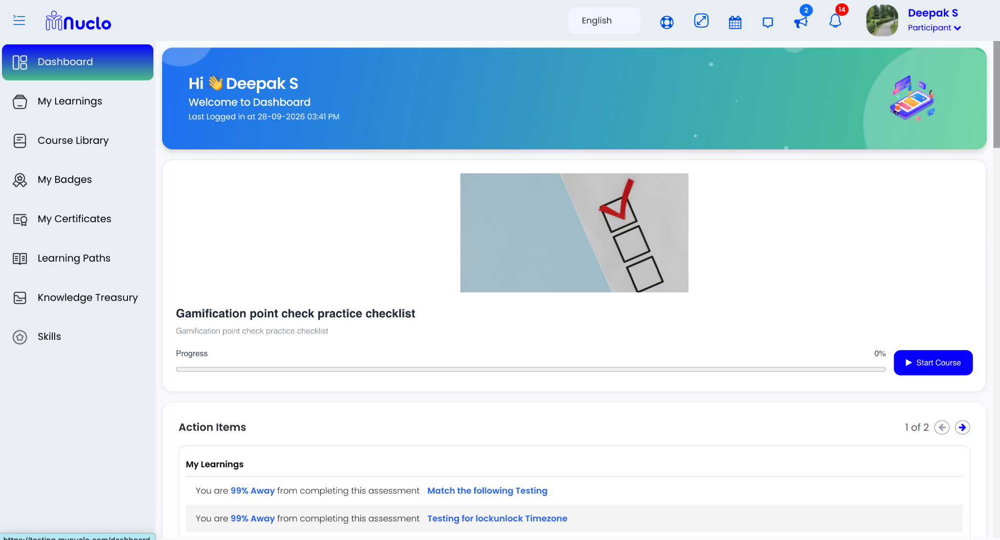
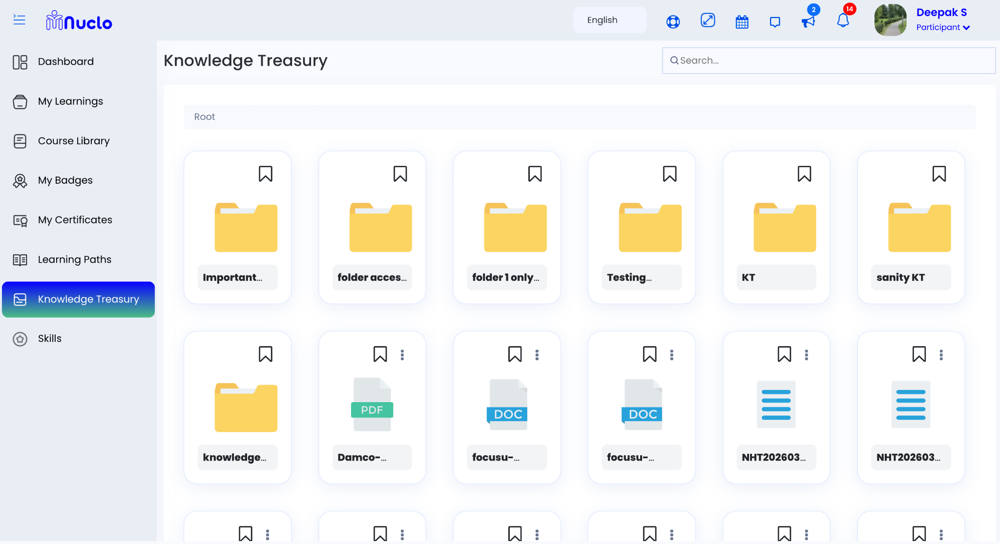
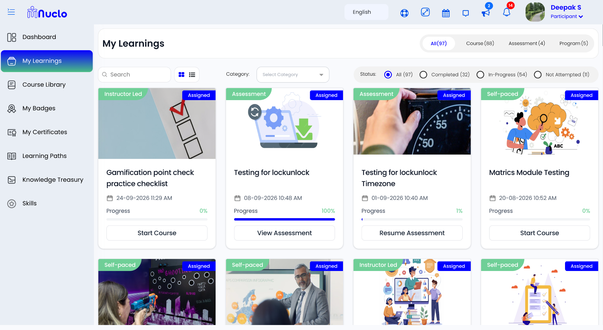
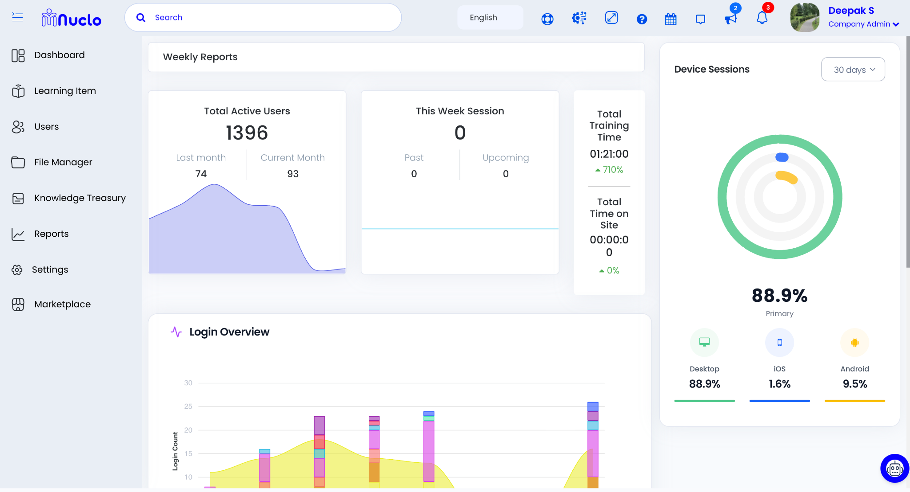

Company AdminManages organization-level learning, users, programs and administration.
01 · Learning · Marketplace · Enterprise LMS · AI
MyNuclo
Redesigning a complex learning platform into a clearer, more scalable experience with learning paths, knowledge hub, surveys, assessments, payments, role-based access and enterprise workflows.
Product strategyUX architectureUI designDesign systemRBAC

Context
MyNuclo evolved from CALF™, an enterprise learning platform built around the Continuous Application of Learning Feedback. The product was designed for training and content providers as well as enterprises that needed to design, manage, deliver, measure and monetize learning at scale.
The redesign had to bring together learning journeys, programs, courses, learning paths, assessments, 360 surveys, feedback, marketplace capabilities and enterprise reporting without making the experience harder to navigate.
CALF™ stands for Continuous Application of Learning Feedback — a product philosophy centered on using feedback as part of the learning experience.
My role
- Requirements and stakeholder alignment
- User research and comparable-product pattern review
- Information architecture and user flows
- Wireframes, prototypes and high-fidelity UI
- Design system, documentation and engineering handoff
- Collaboration with product managers, engineers and other designers
Product ecosystem
The platform combined learning delivery with administration, measurement, engagement and monetization. This broader ecosystem shaped the information architecture and required clear separation between learner, facilitator, manager and enterprise-admin workflows.
Learning journeys
Instructor-led, virtual, self-paced and blended learning experiences could be structured around different learner needs.
Course & program management
Courses, programs and learning paths formed the core structure for organizing and delivering learning.
Assessment & feedback
Assessments, surveys, 360 feedback and LAP workflows supported continuous feedback and learning measurement.
Enterprise administration
Organizations could manage users, cohorts, reporting, branding, permissions and operational workflows at scale.
Design challenge
The biggest challenge was managing product complexity while keeping the experience consistent. I focused on the primary task for each user, progressive disclosure, reusable patterns, common navigation structures and role-specific experiences.
The trade-off was between exposing more functionality immediately and reducing cognitive load. The design direction kept important actions discoverable without overwhelming the user.
Prioritization
I considered user value, business importance, dependencies, complexity and implementation effort. Large requirements were broken into smaller usable increments, with the essential experience prioritized for the first release and enhancements reserved for later iterations.
Validation & collaboration
Designs were validated through usability feedback, stakeholder reviews, internal reviews and—where available—product analytics. PM and engineering were involved early to align on requirements, feasibility, dependencies, edge cases and implementation behavior.
Problem statement
Learners and L&D teams needed a simpler way to find, complete and manage learning as the platform expanded across roles, workflows and enterprise requirements.
Users / personas
Learner
Needs to quickly find assigned learning, understand progress and complete tasks across web and mobile.
L&D Admin
Needs to manage programs, assessments, feedback and reporting with less manual effort.
Enterprise Stakeholder
Needs structured learning data and scalable workflows across enterprise clients.
Role-based access
MyNuclo supports distinct roles so each participant sees the workflows and permissions relevant to their responsibilities.
ParticipantAccesses assigned learning, activities, assessments and progress.
FacilitatorSupports learning delivery, sessions, activities and participant engagement.
ManagerReviews team learning progress, participation and performance.
Platform capabilities
MyNuclo brings learning, engagement, enterprise administration and commerce into one platform.
Courses
Create and deliver structured learning content with videos, audio, images and other learning activities.
Programs
Organize courses and interventions into larger learning programs for cohorts, clients and teams.
Learning Paths
Build guided journeys that connect learning activities to role, program or business needs.
360 Survey
Support multi-rater feedback and development planning through structured 360-degree feedback workflows.
Assessment
Create assessment experiences and connect submissions and feedback to learning outcomes.
Marketplace
Support B2B and B2C course commerce with branded offerings, subscriptions, discounts and payment gateways.
Website Builder
Customize the web presence around the learning and marketplace experience.
Dashboard Customization
Company Admins can shape dashboards around business goals, priorities and required workflows.
Learning impact & measurement
A core part of the product model was connecting learning activity to feedback and measurable outcomes. CALF™ used the Kirkpatrick Model as a framework for measuring learning effectiveness through Levels 1–4, alongside LAP (Learning Application Post), business-impact metrics and user-defined metrics.
Feedback loop
Capture feedback as part of the learning journey and use it to inform development.
Kirkpatrick Levels 1–4
Structure learning-effectiveness measurement from participant response through business impact.
LAP
Use Learning Application Post workflows to capture behavioral application after learning.
Business impact
Support balanced-scorecard and user-defined metrics, with validation by managers or supervisors.
Information architecture
Before: deep folder structures and scattered actions made important tasks harder to discover.
After: a flatter, role-aware structure centered on Home / Action Center → Programs → Knowledge Treasury → Performance.
Key user flows
Assigned learning
Dashboard → Action Item → Program → Learning activity → Completion.
Assessment & feedback
Program → Assessment → Submission → Feedback → Reporting.
Reporting ecosystem
Reporting was a major part of the enterprise experience. Instead of treating reporting as a single dashboard, the platform supported different report types for learning, assessment, feedback, business impact, operations and compliance.
Learning Dashboard ReportLearning ReportAssessment ReportSurvey ReportLAP ReportMetric ReportBusiness ImpactAssignment ReportCourse Status ReportUser ReportCourse Log ReportTraining ReportSCORM ReportGamification Status ReportCertificate Status ReportVC Tool Status ReportAudit Log ReportFeedback ReportClassroom ReportBreak In Batch ReportSession Survey Feedback ReportBadge Status ReportParticipant Learning Hours ReportSkill ReportReport Scheduler Dashboard
Marketplace & monetization
The marketplace extended the LMS into a commerce experience for training and content businesses. It supported branded offerings, products, coupons, reports, subscription plans and taxation alongside marketing tools such as email campaigns and forms.
Commerce
Branded products, subscriptions, discounts and payment gateway support for B2B and B2C learning businesses.
Sales operations
Products, coupons, reports, subscription plans and taxation were organized as part of the marketplace administration experience.
Marketing
Email campaigns and forms supported acquisition and engagement around marketplace offerings.
Design system
Reusable patterns were created for cards, status badges, video players, form controls, navigation, progress indicators and responsive states, with accessibility considered through the UI kit.
TypeClear hierarchy for learning tasks
CardsReusable content + action patterns
StatesProgress, download, success, error
ResponsiveShared web + mobile patterns
Final product experience
Key product experiences
Selected screens showing the learner journey, knowledge access, assessment and enterprise administration experience.




Validation
Validation combined stakeholder reviews, usability feedback, internal design reviews and product analytics where available. Iterations focused on reducing navigation friction, clarifying states and keeping complex enterprise workflows understandable.
End metrics / impact
+25%Retention — reported project outcome in the resume
-18%Onboarding drop-off — reported project outcome
+30%Satisfaction — reported project outcome
-30%Admin task time in the Nu360 feedback experience
Live product
Explore the live product
Open live ↗Use the live experience as a companion to this case study. Screens shown above are presentation placeholders until actual product screenshots are added.
Impact
30%Reduction in administrator task time for the Nu360 feedback experience
50+Enterprise clients supported by structured reporting workflows
End-to-endDiscovery, UX, UI, design system, documentation and delivery
Good product design makes complexity feel manageable — for the user, the business, and the team building it.
Next step
Want to talk through a product challenge?
Let's connect and explore the problem, the users, and what a strong product experience could look like.